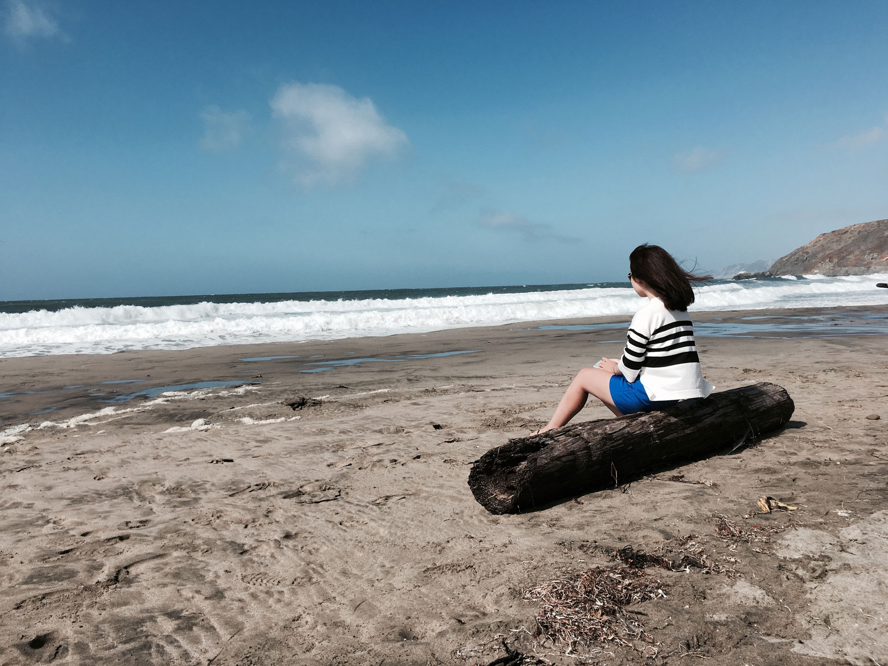
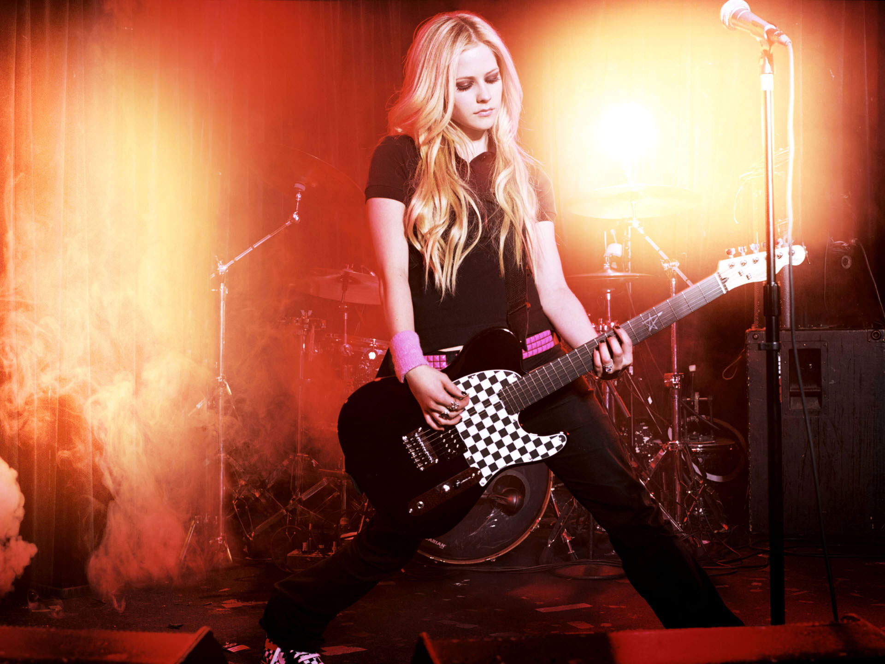

Hello, my name is
Victoria Bian
I come from
I am currently studying at

My favorite food is
Sushi
On Spotify, I have over

I am a big fan of
Avril Lavigne
My dream city is
Paris
The designer I admire the most is